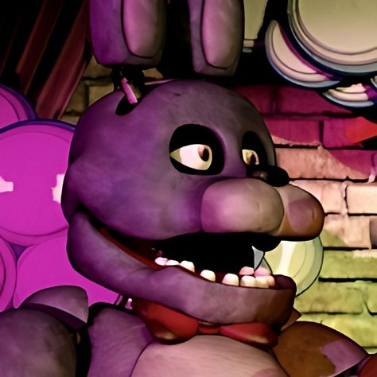
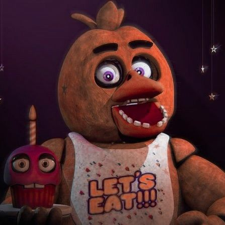
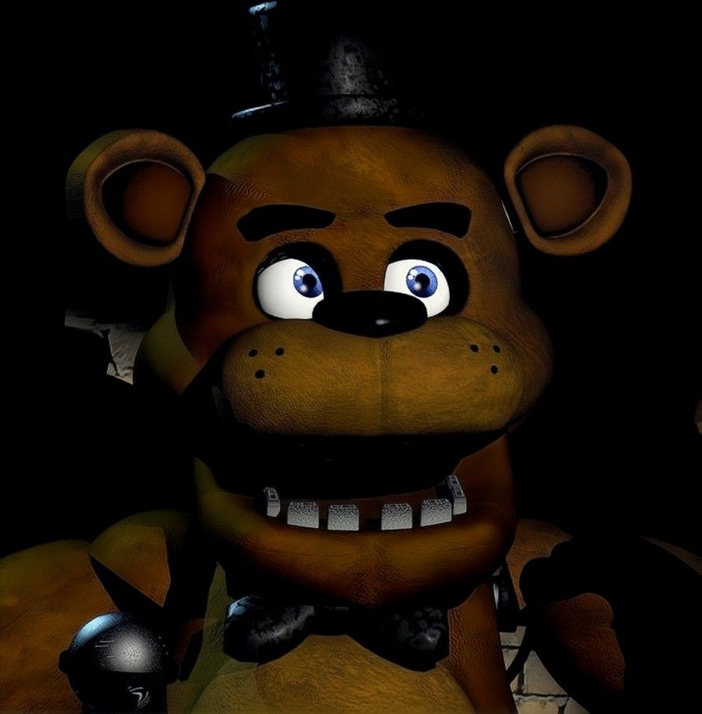
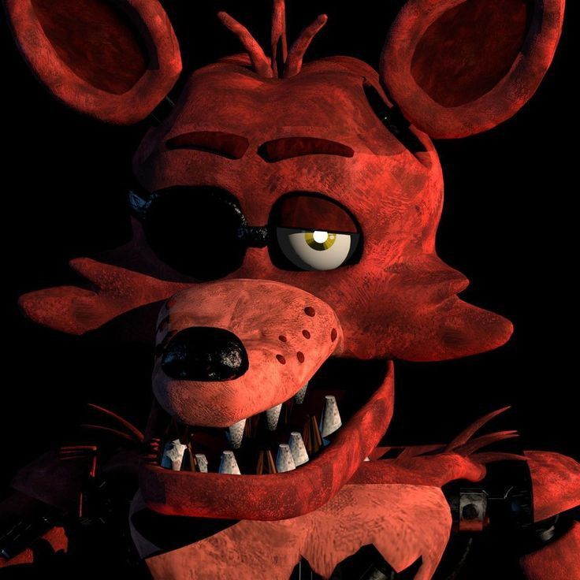

O jogo começa as 12AM e seu objetivo é durar até as 6AM, onde cada hora do jogo dura 90 segundos, totalizando quase 9 minutos de sobrevivência.
No jogo é um sistema de energia presente, começando dos 100% até chegar aos 0%,
se a energia acabar, é gameover, coisas como fechar portas, usar as luzes e usar
as câmeras aumentam o uso da energia, além de que sempre vai ter um gasto de energia
pasivamente.
Na imagem a baixo, é um exemplo em game da bateria:
Power Left: é a porcenagem da sua energia, ela vai diminuir
mais rapidamente a medida de mais barras presentes.
Usage: é a quantidade de equipamentos sendo utilzados
como na imagem vemos que tem três barras, uma
obrigatoriamente sendo a passiva, e as outras duas
podendo ser portas fechadas, luzes ou câmeras.
No jogo as câmeras usam uma barra de energia, elas tem a funcionalidade
para observar onde os animatronics estão.
A baixo uma imagem do mapa das câmeras com a câmera dos banheiros
selecionada.
No mapa, é totalizado 11 opções para saber onde cada animatronic está.
No jogo, os animatronic podem entrar por ambos os lados,
e em cada um dos lados possui um botão de porta e um botão
para as luzes.
As luzes servem para saber se tem algum animatronic
presente, e as portas são para impedir ataques deles.
Na imagem, é possivel a porta de direita, onde ela está aberta, junto com o botão de luz e de porta desativados.
No jogo existem no total cinco animatronics sendo eles, Bonnie, Chica, Freddy, Foxy e Golden Freddy, a seguir, suas fotos a como eles agem.
Bonnie
Ele começa no palco e sempre vem da porta pela esquerda.
Chica
Freddy

Ele começa pelo palco e vem apena pela porta da direta, porém não se pode ver ele com as luzes da porta, apena com o as câmeras, quando ele chegar na porta, ele não vai sair de jeito nenhum então deixe a câmera selecionada da porta da direita para evitar o ataque dele caso a porta estiver aberta.
Foxy
Ele fica em seu palco privado, onde que se não vigiado, ele pouco em pouco começa am sair, e quando sair vem correndo para sua sala, feche a porta para evitar quando ele vier, ele sempre vem pela esqueda.
Golden Freddy
Ele aparece de forma anormal, caso você feche a câmera quando tiver um poster de Golden Freddy, ele surge na sua sua sala, feche e abra a câmera para ele sair.
Voltar para o Menu Principal